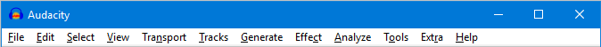

Menu Reference
From Audacity Development Manual
Many commands in Audacity appear in one of the menus and are documented on the linked pages.
- The full set of Audacity commands are also listed in the Keyboard Shortcut Reference.
- Shortcuts can be added and changed in Keyboard Preferences - which can be faster than using the menus.
- Most of the most used menu commands are available from the Toolbars
Clickable Images
Clickable Images
|
The Menu Bar
Image of the Menu bar as it appears on Windows
- 
The menu bar is at the top of the Audacity window. The menu bar is slightly different on Mac, it has an 'Audacity' and 'Window' menu, due to the conventions on that operating system.
The Extra Menu
| The Extra Menu
The Audacity menu bar shown above shows an additional optional menu: Extra.
|
The Menus
| Menu | What you'll find there |
|---|---|
| Audacity (Mac Only) | About Audacity, Preferences, System Services, Show and Hide Audacity and other applications, and Quit. |
| File | Working with Audacity project files and other audio files. |
| Edit | Altering the audio in your project. |
| Select | Making selections of tracks, or within tracks, in your project. |
| View | Change Zoom levels. Show clipping, Undo History, Mixer Board, Toolbars and Karaoke window. |
| Transport | Control recording and playback. |
| Tracks | Adding, aligning and labeling audio tracks. |
| Generate | Creating new audio in your project. Audio generating plug-ins will also appear here. |
| Effect | Processing the audio in your project. External Effects plug-ins will also appear in this menu. |
| Analyze | Analyzing the audio in your project. External plug-ins that act on audio but do not produce audio output will appear here, as well as tools like Silence Finder and spectrograms. |
| Window (Mac Only) | Minimize and zoom windows, choose the project window to bring to the front. |
| Tools | Additional menus for Macros and other plug ins. |
| Extra | The Extra menu provides access to Toolbar operations and to extra commands for track focus and movement of the editing or playback cursor that are not available in the default Audacity menus. These will be of most interest to visually-impaired users or those who have difficulty using the mouse. Shortcuts can be assigned to these commands if required. |
| Help | Short and full Help; capture Audacity screenshots; download current Audacity; audio device information; show the Log and generate support data; Audacity version number, license and build information. |